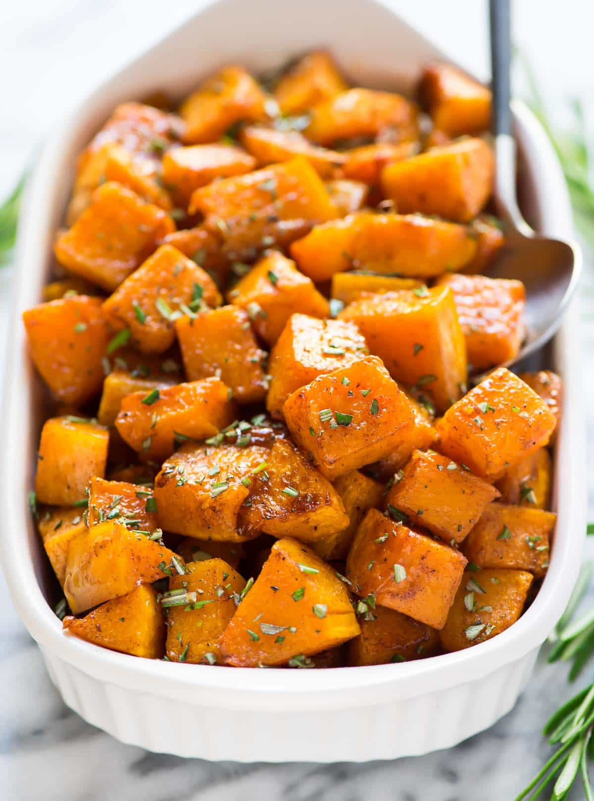

Roasted Butternut Squash

Description
This butternut squash comes out soft and tender. Pairs well with
Oven Baked Salmon.
Ingredients
- 1 medium Butternut Squash
- 2 Tbsp Olive Oil
- 1 Tbsp Italian Seasoning
- Salt and Pepper to taste
Directions
- Preheat oven to 425 degrees.
- Using a vegetable peeler, peel the squash and cut in half vertically
using a chef's knife (be very careful!).
- Scoop out the seeds from the squash. Discard the seeds.
- Cut the squash into 1/2 inch cubes.
- In a medium bowl, add cubed squash, oil, and seasonings. Toss to combine.
- Spread squash onto an aluminum baking sheet and bake for 30 minutes.
Back to home.